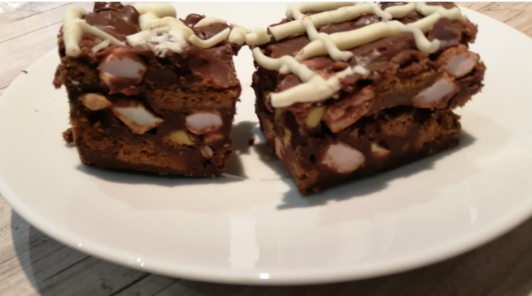

Home
Rocky Road

Description
If you've got a hankering for a hefty helping of decadent dessert, replicate this recipe and you'll be met with a colossally covetable confectionary creation!
Ingredients
- 150g butter, cubed
- 150g golden syrup
- 150g dark cooking chocolate, broken into pieces
- 300g milk cooking chocolate, broken into pieces
- 250g Biscoff biscuits, chopped into chunks
- 4 Cadbury's Crunchie bars, chopped into chunks
- 100g mini marshmallows
- 1/2 tsp salted caramel flavouring
- 100g white chocolate (optional for decorating the top)
Method
- Place marshmallows and chunks of Biscoff and Crunchie into a large bowl, and leave it aside.
- Put butter cubes and golden syrup in a different cooking bowl, and create a water bath by placing it in a saucepan of boiling water.
- Stir until butter melts and mixture approaches boiling point, then add salted caramel flavouring.
- Remove bowl from heat and add in all cooking chocolate pieces, stirring until chocolate melts completely and mixture has a smooth texture.
- Pour mixture into the bowl of dry ingredients that you prepared in step 1, and mix well.
- Evenly spread resulting mixture on baking paper in a rectangular dish, and refrigerate for at least 2 hours.
- For the optional white chocolate top decoration, break some white chocolate into pieces, put them inside a piping bag, and immerse in boiling water to melt. Then simply squeeze out the melted chocolate onto the rocky road in whatever pattern you wish.
- And you're done! All that's left is to cut the rocky road into pieces. Try not to eat too much at once! ;)